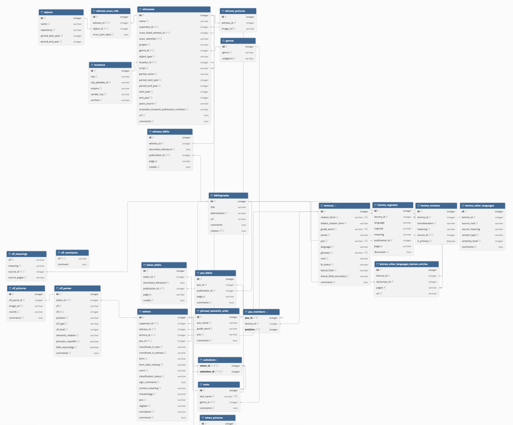

Determinatives are signs that are written but never read aloud. They tell the reader what kind of word comes next or just came before. This project asks what drives scribes to use them.
Code ClassifiedPaper · to be updated
Classifier Exploration
Reviewed primary scholarship on Akkadian determinatives to ground hypotheses in existing work.
Analyzed determinative usage statistically across ORACC texts extracted with the ORACC parser.
Designed experiments testing how region, genre, era and scribal literacy shape determinative use.
Probed existing Akkadian translation models to measure how much information determinatives carry.
Building a masked language model (MLM) for Akkadian determinatives, using cross lingual transfer (CLT) and continued pretraining (CPT) to make the most of limited data.
𒆠KIwritten after place names
𒀭DINGIRwritten before divine names
𒄑GIŠwritten before wooden objects
Three common determinatives.
iClassifier
Designing a relational database schema (~25 tables, written in DBML and implemented in SQLite) compatible with ORACC and the iClassifier project so that data can be streamlined from one to the other.
Wrote a staged Python/SQLite loader (download, explore, lemmas, texts/witnesses, tokens, classifiers, probes, integrity checks) to run in small chunks in order to have built-in checks for catching schema errors.

The database schema, designed in DBML and implemented in SQLite.